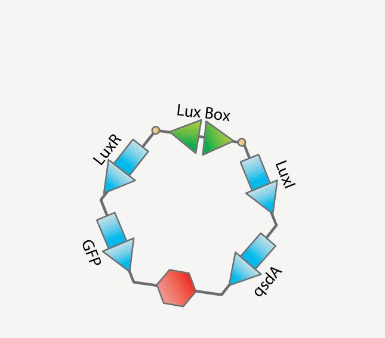
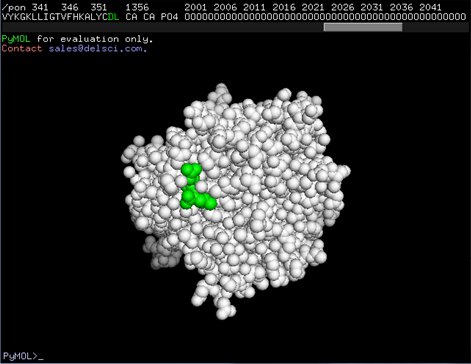
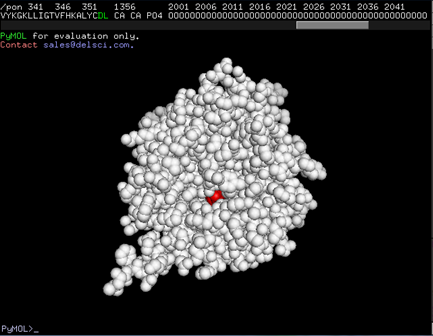

ABSTRACT
Our project aims at developing a self-regulatory system for the degradation of virulent factors. We plan to integrate quorum sensing and pon1 to create this system of self-regulation. Quorum sensing will be used to detect the presence of high cell densities and to activate pon1 upon detecting high cell density. Pon1, acting as a repressor, will degrade the signal molecules needed for quorum sensing and thus turn off quorum sensing as well as itself. It will reactivate upon the reactivation of quorum sensing and this cycle of self-regulation will persist. This prototype system is meant to test the application of this system but the main goal is to introduce this system to pseudomonas aeruginosa as a means to prevent the harm that it causes.
The quorum sensing regulatory gene circuit is meant to target pathogens such as pseudomonas aeruginosa that use quorum sensing as a means for regulation of virulent factors. However, our hope is that by creating a new paradigm for fighting virulence in pathogenic cells will provide insight for future works and endeavors. This system is meant to not be only restricted to pseudomonas aeruginosa but to be altered to fight virulence in other pathogens.
PHASE I
LUX OPERON
AHL or Acylated Homoserine Lactones belong to a class of autoinducers. These autoinducers act as chemical signaling molecules that gram-negative and gram-positive bacteria use as a way of communicating with one another. Additionally, this form of communication is used to regulate various physiological activities and more specifically virulence.
The detection of these autoinducers involves diffusion into the cells and binding to receptors. However, the binding autoinducers and receptors does not usually occur until a threshold concentration of autoinducers is reached. High concentrations of gram-negative and grampositive bacteria is often accompanied by a high concentration of autoinducers and so detection of these autoinducers is achieved in the presence of a high concentration of autoinducer producing bacteria [1]. This cell-cell communication in bacteria is a process called quorum sensing, which allows for bacteria to respond to fluctuations in the number of species present by altering physiological activities [1].
Acylated Homoserine Lactones are neutral lipid molecules composed of a homoserine lactone ring with an acyl chain. AHLs produced by different species of Gram-negative bacteria vary in length and composition of the acyl chain which contain 4 to 18 carbon atoms, making most quorum-sensing systems within bacterium species or group specific. AHLs are synthesized by AHL synthases and diffuse in and out of the cell by active or passive transport [1].
LuxR: LuxR is a gene that codes for the receptor protein that binds to the autoinducer. As the receptor binds to the autoinducer, the complex binds a specific sequence of DNA in front of the right operon and activates the expression of lux structural genes. The LuxR protein is at first inactive but when the autoinducer binds the receptor protein becomes activated. The LuxR-autoinducer complex binds to a 20 bp palindromic sequence, called the LuxBox [2].
LuxI: LuxI is a gene that synthesizes the autoinducer.
LuxBox: The LuxBox is a 20 bp palindromic promoter sequence. The binding of the luxR-autoinducer complex to this sequence increases RNA polymerase's affinity towards the promoter region of the LuxI and structural genes downstream of LuxI region [2].
[1] Taga, Michiko E., and Bonnie L. Bassler. "Chemical Communication among Bacteria."(Sackler NAS Colloquium) Chemical Communication in a Post-Genomic World. The National Academies, 25 Nov. 203. Web. 30 July 2013.
[2] Bluth, Brian J., Sarah E. Frew, and Brian McNally. "Cell-Cell Communication and the Lux Operon in Vibrio Fischeri." Bioluminescence and the Lux Operon in Vibrio Fischeri. Carnegie Mellon University, 31 July 2013. Web. 31 July 2013. https://www.bio.cmu.edu/courses/03441/TermPapers/97TermPapers/lux/default.html.
qsdA
fill me in and stuff
GS LINKER
 
The fusion of two proteins and its ability to still function correctly is facilitated by the glycine serine linker. The fusion of two proteins, and therefore the expression, requires that the folding and attributes of one protein not affected by the other. This is usually not the case, an extreme example being when the last amino acid of a particular protein is near some sort of active site. If the other protein was to begin its formation from this point then the active site and the functionality of the first protein would be at risk. In order to eliminate such risk there are linkers used. Linkers usually contain amino acids that are not very active and would not harm the functionality of the protein, glycine and serine are two very common amino acids used for linkers. The linker would be composed so that there would be an alternating trend of glycine then serene. The amount of reiterations is variable and depends on the location on the protein where the last amino acid is located. Normally, there is one or two reiterations of the glycine and serine. Upon the proper insertion of a linker, the expression of two proteins will be joined with no decrease in activity or functionality.
We are using a glycine serine linker in our project to join the expression of Pon1 and GFP. The last amino acid of the Pon1 protein lies on the surface of the protein and is far away from any important locations. Therefore, we are implementing a 2 repeats of glycine serine to make sure no factors harm either protein’s function. The reason we are implementing this fusion is to have a clear indication when Pon1 in the cell has become active, GFP will become active and create green pigmentation, and to visually see the self-regulation that the lux operon and pon1 create. This, amongst other things, will allow us to do multiple assays about pon1 and its function.
ASSAY
results!
PHASE II
One of the developing problems in healthcare is how to treat bacterial infections. Since the discovery of penicillin, antibiotics have been the answer. Antibiotics work by selectively targeting bacteria and killing them before they are able to reproduce. Unfortunately, when bacteria are treated with antibiotics, some will develop a resistance to particular strains of antibiotics due to random mutations. Antibiotic pressure is the term used to describe antibiotic promotion of resistance development by pathogens1. The evolution of bacteria, stimulated by antibiotics, is easily observed because of how quickly new bacterial generations are produced. If bacteria become resistant to multiple antibiotics, they can be termed “superbugs”.
As one could imagine, this problem is magnified in hospital settings. Hospitals have a high usage of antibiotics and therefore are exposing strains of bacteria to many antibiotics2. Some examples of resistant bacteria pathogens are methicillin resistant Staphylococcus aureus, Enterococci, Pseudomonas, and Acinetobacter1.
New methods to eliminate bacteria to circumvent traditional antibiotics are being investigated. One of these methods is quenching autoinducing peptides of quorum sensing bacteria. Quorum sensing is the ability of microorganisms to coordinate gene expression in relation to their population density3. When certain bacteria are in high- density situations, small autoinducers or peptides are released to neighboring bacteria.
After binding to other bacteria, the peptide initiates a change in the expression of certain genes. This could result in bioluminescence in some strains of bacteria such as Vibrio fischeri, or the release of virulent factors in other strains such as Staphylococcus aureus5. S. aureus infections can be devastating or relatively minor. It can result in lesions, blood poisoning, and septic arthritis amongst other conditions.
The peptides are only effective when numerous bacterial organisms are present. If only a few are present, the effect will not be large enough to succeed. In principle, it should be possible to eliminate bacterial infections by intercepting this communication system. In fact, Park et al. demonstrated this potential. But, first, a little more information regarding S. aureus is necessary. The two main virulent factors in the organism are protein A and alpha-Hemolysin with both proteins being regulated by quorum sensing3. They showed that interrupting the signaling communication on blood agar plates diminished expression of alpha-Hemolysin. Additionally, it was shown that staphylococci infection in mice was reduced with the administration of an antibody to bind the autoinducing peptide3. This research offers promise that quenching of autoinducing peptides can be a viable treatment. Utilizing quorum quenching treatments over traditional antibiotics is advantageous because it does not provide selective pressure against the bacteria3. The expression of virulent factors is suppressed, but the essential metabolic activities of the individual bacteria are not disrupted and bacterial resistance developed as easily.
GOAL
We hope to take the research described above a step further by designing an enzyme to disrupt the quorum sensing system by degrading the autoinducers. While antibodies can bind to autoinducers, they cannot hydrolyze them. Additionally, antibodies are bulky structures, which can pose problems for drug delivery applications. The particular peptide precursor for MRSA has a thioester linkage created from a bond between a cysteine residue and the terminal carboxyl group. The thioester linkage will be the target for the enzyme to hydrolyze the peptide precursor and disrupt the quorum sensing system of the bacteria.
![[image:AIP]](images/AIP_model.png)
DESIGN
Rosetta is an essential software tool for protein redesign. The software optimizes the residues around the transition state to maximize the catalytic efficiency. This is achieved by first providing the software with a model of the transition state surrounded by the side chain and backbone of a protein in the best theoretical positions. The enzyme model can then be called a theozyme. Rosetta then Score. Rosetta Scores correlate with Gibbs Free Energy, but do not measure entropy directly, only indirectly. The design process utilizing Rosetta3 can be broken down into four parts: choice of catalytic mechanism and corresponding theozyme, matching identifying sites in the scaffold library where the theozyme can be placed, designing the found sites, and evaluating and ranking the resulting designed sequences. This process allows one to alter the substrate specificity of an enzyme4.
Foldit is a program that provides a visualization of all of the interactions a protein makes. It is particularly helpful in viewing hydrophobic, aromatic stacking, and hydrogen bonding interactions. Foldit also contains a scoring function that useful for understanding the effects the potential side chain mutations can make. We made the following mutations, listed below, to enhance binding.
|
Original Score: |
| Mutation | Original | New Score |
|---|---|---|
| Aspartate-54 | Alanine | -990.54 |
| Asparagine-103 | Threonine | -988.43 |
| Methionine-105 | Asparagine | -991.94 |
| Asparagine-101 | Threonine | -988.35 |
ASSAY
If the designed protein is successful, it will hydrolyze the autoinducer at the thioester linkage and produce free cysteine with exposed thiol groups. To determine the protein’s activity, we utilized Ellman’s Reagent. This reagent enables us to measure the concentration of sulfur in solution with UV absorbance. The reaction that Ellman’s Reagent undergoes in the presence of sulfur can be seen below.
Initial results are promising. As the figure shows, when the thiol absorbance of AIP and the protein are measured individually, the combined absorbance is 0.326. However when the two are measured simultaneously (interacting with each other), the absorbance rises to 0.367. This appears to indicate that the protein hydrolyzed the peptide and increased the sulfur concentration.
FUTURE
The designed protein contains a total of seven cysteine residues. While these should be accounted for with the background absorbance measurements, it would be ideal to remove this absorbance by mutating the residues to another amino acid with similar properties, such as serine. Additionally, further mutations to residues can be used to enhance the binding of the protein with the various types of autoinducers to generate specificity for different strains of bacteria.
| Original | Potential Mutation | Amino Acid number |
|---|---|---|
| Threonine | Glutamine | 101 |
| Threonine | Serine | 101 |
| Alanine | Serine | 54 |
| Alanine | Glutamate | 54 |
| Alanine | Serine | 56 |
| Aspartate | Methionine | 175 |
| Glutamate | Glutamine | 60 |
| Glutamate | Aspartate | 60 |
| Glutamine | Alanine | 233 |
| Glutamine | Methionine | 233 |
Acknowledgments
We would like to acknowledge Dr. Sagar Khare and Andrew Laudisi for their guidance and input throughout the process. We would also like to acknowledge Dr. Tom Muir for providing the AIP used to test the functionality of the protein.
For the design of the website, we got many ideas from Mary Lou and